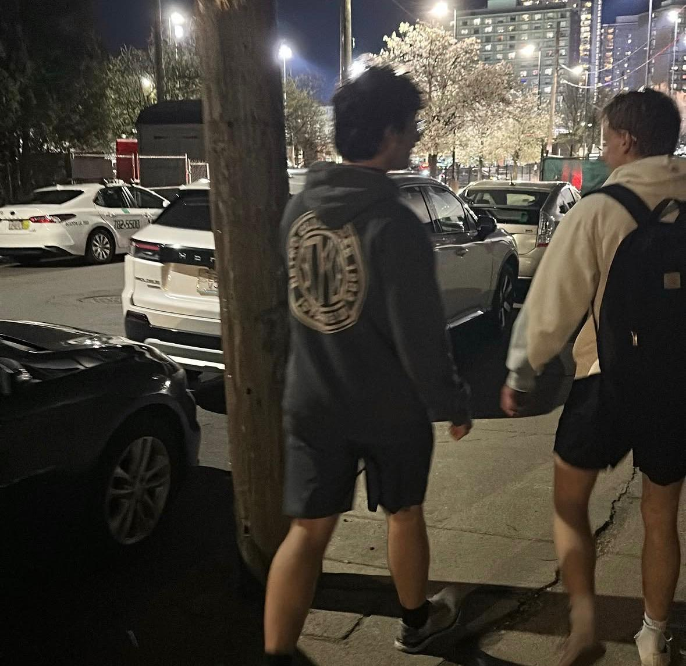

06.07.2026
Allston sakinlerinden lagim kokusu sikayeti

Allston sakinlerinin lağım kokusu şikayetlerinden dolayı çevreye intikal eden Boston Police (skrr skrr) kokunun kaynağının üniversite öğrencisi (S.S.T) olduğunu saptadı. Şahışının mabadına mantar tıpa takılarak sorun çözüldü.